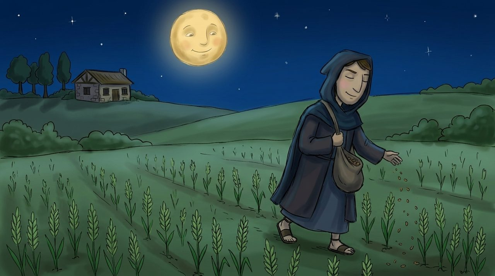
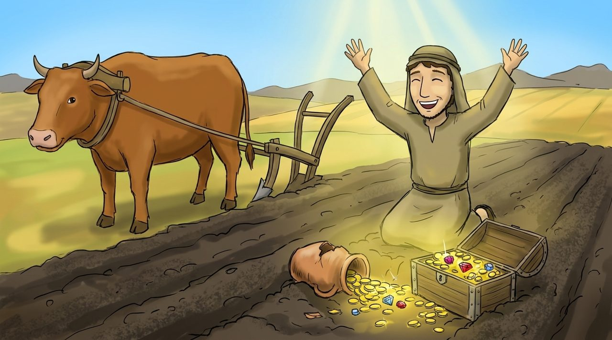
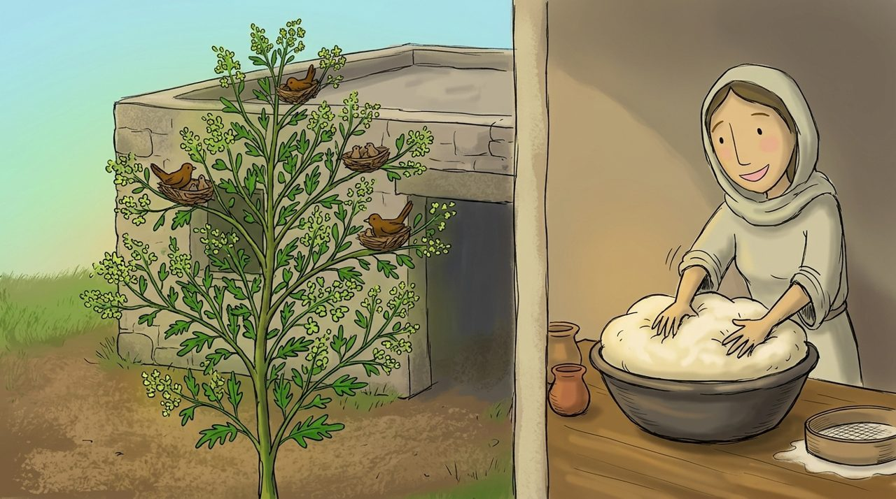
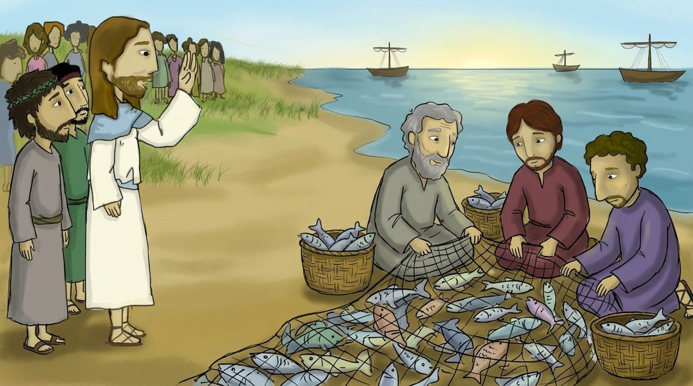

장면 1 · 13:24–30
밀과 가라지
어떤 사람이 밭에 좋은 밀 씨를 뿌렸어요. 그런데 밤에 원수가 와서 씨를 뿌리고 갔어요.
종들이 가라지를 뽑겠다고 하자 주인이 말했어요. “밀까지 뽑힐 수 있으니 추수 때까지 함께 자라게 두어라.” 하나님은 마지막 날에 바르게 나누실 거예요.

마태복음 13:24–58
노란 낱말을 누르면 뜻이 나와요. 🔊 버튼을 누르면 읽어 줘요.

어떤 사람이 밭에 좋은 밀 씨를 뿌렸어요. 그런데 밤에 원수가 와서 씨를 뿌리고 갔어요.
종들이 가라지를 뽑겠다고 하자 주인이 말했어요. “밀까지 뽑힐 수 있으니 추수 때까지 함께 자라게 두어라.” 하나님은 마지막 날에 바르게 나누실 거예요.

“하늘나라는 와 같아요. 아주 작은 씨지만 자라면 새들이 깃들 만큼 큰 나무가 돼요.”
“하늘나라는 과 같아요. 조금만 넣어도 반죽 전체가 부풀어 올라요.” 하나님 나라는 작게 시작해서 크게 자라요.
“하늘나라는 밭에 숨겨진 와 같아요. 그것을 발견한 사람은 너무 기뻐서 가진 것을 다 팔아 그 밭을 사요.”
“좋은 를 찾던 상인이 아주 값진 진주 하나를 발견하자, 가진 것을 다 팔아 그것을 샀어요.” 예수님은 그만큼 귀한 분이에요.

“하늘나라는 바다에 던져 온갖 물고기를 모으는 과 같아요. 어부들은 좋은 물고기는 그릇에 담고 나쁜 것은 버려요.”
예수님이 물으셨어요. “이 모든 것을 깨달았느냐?” 제자들이 “네!” 하고 대답했어요.
“천국은 마치 밭에 감추인 보화와 같으니”
마태복음 13:44 · 어린이가 이해하기 쉬운 말로 옮김
은 마치 에 감추인 와 같으니
빠진 낱말을 순서대로 눌러 보세요.
밭에서 보물 상자를 발견하고 기뻐하는 나를 그려 보세요. 상자 안에는 예수님을 그려 넣어도 좋아요.
예수님, 하늘나라의 비밀을 쉬운 이야기로 알려 주셔서 감사합니다. 작은 겨자씨 같은 제 믿음도 크게 자라게 해 주세요. 예수님이 세상 어떤 보물보다 귀한 분이심을 기억하며 기쁘게 따르게 해 주세요. 예수님 이름으로 기도합니다. 아멘.